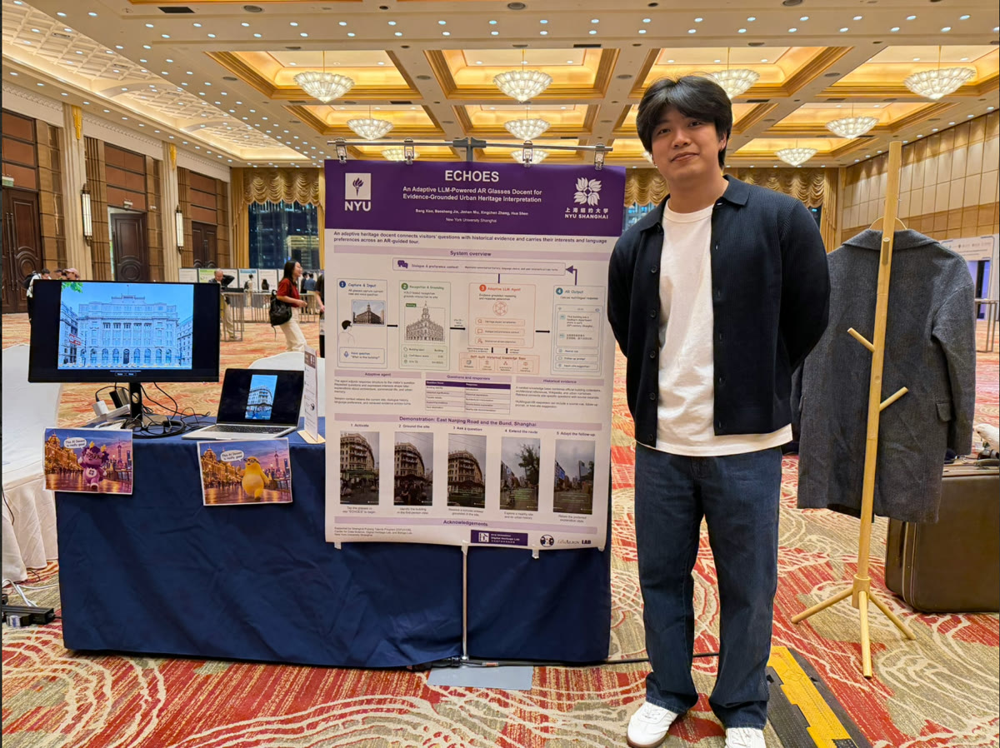

Context agent parallel
Tracks conversation history, language choice and visitor interests, and passes them to each turn.
Capture & input
AR glasses capture the current view and a voice question.

Voice question"What is this building?"
Recognition & grounding
Multimodal API (Doubao) identifies the building.
Building- Building label
- Building
- Confidence score
- 0.92
- Site ID
- SH-00123
Adaptive LLM agent
Evidence-grounded reasoning and response generation.
- Heritage docent initialization
- Receives visitor context
- Interaction-driven adaptation
AR output
Concise multilingual response.
ENThis building was a landmark department store in early 20th-century Shanghai…
中文这座建筑曾是著名百货楼栋，建于20世纪初……
- Source cue
- Follow-up prompt
- Next-site suggestion
Self-built historical knowledge base
- Wikipedia
- Official collections
- Architectural reference
- Urban narratives
Rokid AR glassesVisitors keep their eyes on the building, not a phone. Chosen over Meta Ray-Ban and Google Glass: built for the Chinese market, and a partner of our Digital Heritage Lab.
Doubao multimodal APIYOLO: our training set was too small. Gemini: needs a VPN in China and dropped on tours. Doubao: best with Chinese questions and street scenes.
Doubao agent + Bund-MKGA system prompt makes it a heritage docent. Bund-MKG covers the 27 protected buildings of the Bund, with archival records, local memories, folklore and dialect.
Custom UI + voiceAnswers short enough to read at a glance, also read aloud with subtitles. Switch language on the AR page, or just by asking.

